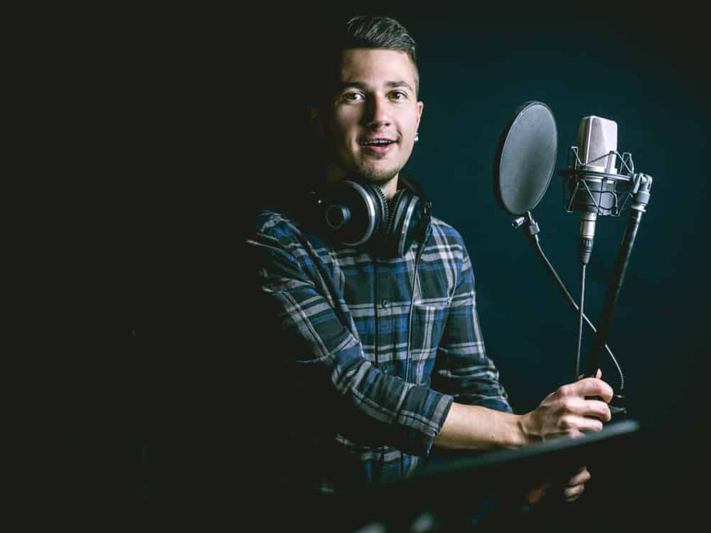

game localization
- At Arlation, we believe that it is imperative to provide accurate, consistent, clear and fun translations that conform to the cultural norms and nuances of each local market, all while maintaining the soul of the game.
- This is Localization and this is our game.Adapting games with their content, graphics and sounds to different Arab cultures is a highly specialized task that requires mastering the language, understanding the culture, and familiarity with history.
- Our native-speaking translators, along with our quality assurance professionals, dubbing specialists, voiceover talents, experienced engineers, and specialized project managers all work together to deliver an exceptional localized game, that will leverage your investments and guarantee a wider and deeper reach to global markets.
- We offer our game localization to Middle Eastern and North African Arab Countries, taking heed of cultural nuances, terminology correctness, consistency and appropriateness, so that all gamers feel that games were developed in their mother tongue and in accordance to their culture.
text translation
- The power of words cannot be undermined, in fact, and as Twain said, right words can change the world. It is this realization that drove us to cater to the needs of partners aiming at streamlining their content, reaching global markets and amplifying their profits.
- Our talented linguists are trained to apply and adhere to the best practices in translating English to Arabic and vice versa while upholding accuracy and rendering the meaning of the original text. Their skills are manifested through transforming the source text to the native desired language and remaining faithful to the original text.
- Being native speakers and experts, cultural adaptation and appropriateness is rendered great attention.
- Our last stop in the quality assurance is rigorous proofreading the text by subject matter specialists, who seamlessly refine the text to sound as if it were written in the translated language. This also entails terminology verification, consistency, validation, and technical formats.Our pool of specialists cater to different types of translations from marketing communication, to academic literature, medical and legal documents, and technical translations while preserving the spirit and tone of the source text.
- Stemming from our understanding of different industries and business fields, we have established partnerships with numerous clients spanning over many years with millions of words translated. With this capacity and portfolio, an accurate, smooth, cost effective and speedy translation, is guaranteed.
subtitling
- In a world where language is expected to cross borders, subtitling with precision while capturing the essence, humor and style of the original dialogue is imperative.
- At Arlation, a leading subtitling company operating in the Middle East, we have subtitled millions of words covering different topics of documentaries, comedies, action-packed films, time-honored classics, television series, horror shows as well as dramas and historical and educational programs.
- Our in-house and freelance associates are native speakers, experienced and accustomed to handling large volumes, at high speed, while safeguarding quality. They also undergo extensive training to ensure that our high standards are met at all times. Our editing, proof-reading, quality assurance systems and procedures are streamlined to guarantee a customer-centered product of outstanding quality.
- The up-to-date software and tools at Arlation allows for converting different types of files and formats, time captioning, with the highest technical and linguistic standards.
- Our list of partners includes some of the most internationally renowned and affluent terrestrial and extraterrestrial television stations as well as various production houses across the world.

dubbing
- At Arlation studios in Egypt and Jordan, the attention to detail and quality of work is unparalleled. The two language (Arabic/English) facilities focus on localizing a script's dialogue from one language into another, every time, on time and on budget.
- Our vast experience covers TV series and films dubbing, marketing videos and spots, video games, animations, documentaries, educational programs and much more. Our dedicated and creative talents make dubbing as easy and fun as a jingle, done fluently and accurately.
- Our services exceed execution to advise and guide on selecting the most appropriate and authentic accent for the market depending on the content whether Modern Standard Arabic, Egyptian Arabic, Syrian Arabic, Lebanese Arabic or even Classical Arabic.
- The meticulous post production completed with the most advanced equipment and technology, and bullet-proof workflow allow you to capitalize on your profits, maximize your sales, reach your target audience around the world and boost your brand presence.

copywriting
- An organization is capable of achieving higher consumer commitment, increasing potential growth, and leveraging on brand awareness and loyalty when communicating with relevant, useful and compelling content.
- The knowledge that we have accumulated over the years of market and corporate landscape has allowed us to master the intricacies of communicating with stakeholders and ultimately accomplishing long and short term business goals and objectives. We have the ability to transform regular content into a journey where the reader is drawn to a world of eloquence, purposefulness and rich content.
- Our content creation includes press releases, corporate reporting, articles, marketing and advertising communication, blogs and digital content, all in the same tone of voice. It is imperative in this mass and cluttered communication era that the organization cuts through the noise, stands out amongst competitors and communicates clearly and compellingly to its audience.
- Our content creation process encapsulates in-depth research and understanding of the organization itself, its priorities, goals, target audience and competitors, to tailor content, reflective of the tone of voice and identity of the organization.

quality-control & testing
- At Arlation, we take pride in being guardians of quality, not only at the last step, but throughout the localization process.
- This integral part of localization and translation is performed on three separate levels; linguistic testing, cosmetic testing and functionality testing.
- Linguistic Testing: This entails consistency of terminology throughout the files, accuracy of translation, verification against glossaries and much more.
- Cosmetic Testing: This entails character and box display, images, design and much more.
- Functionality Testing: This entails testing the software performance and verification that the localization process has not introduced any bugs to the game that may cause breaks or crashes.
- Our attentive and detail-oriented quality control and testing team is fully dedicated to producing a flawless enjoyable game to the end users.

video editing
- Videos do take a huge market share as they are used to tell people about your product or service so they can go viral and spread awareness within no time in addition to having the ability to directly & smoothly deliver the message to your audience and engage with them.
- Using video as part of marketing is gaining a lot of traction across businesses of all sizes, including entrepreneurs and small businesses as it helps increase engagement on your digital and social channels, educates your audience, and allows you to reach them with a new medium.
- From the point of view that a single image can say a lot, Arlation offers you video editing because we are Convinced that we can make your scene more vivid.

consultation
- Translation At Arlation, our motivation to achieve excellence in the novel industry of digital entertainment and gaming is transferred to our clients. We offer comprehensive consulting services on game translation and localization that make it possible for companies to focus on creating world-class games that could attract millions, engaging with their customers, and growing their sales.
- Our experience goes beyond that to include offering advice on commissioning translation, recruiting and training translators and talents, streamlining guidelines, processes and procedures, and administrative, legal and financial advice pertaining to the industry.
- Television and Film Post-Production
As pioneers in the market, we offer consultation on the post production process. This encapsulates selection criteria for commissioning a subtitling and dubbing house, ground rules and concrete steps to establishing a subtitling and dubbing department, and the best equipment needed. - In regards to human resources, we offer guidance on capacity building, training and skills development to editors, sound engineers, technicians, and many others to make sure that the last step in television and video production, such as enhancing the video, editing raw footage to cut scenes, inserting transition effects, editing the sound track, audio-visual effects, and more is simply perfect.
- Culture is a diverse and sensitive matter that could irrevocably harm your business if not carefully considered. Therefore, we provide consultations on the Arab culture, language, mentality, social norms and key issues to help you achieve memorable and remarkable impact. In every consultation and aspect, our team of experts who have worked with a multitude of clients provides a holistic, tailored and seamless service that is guaranteed to exceed your expectations.

training
- As a pioneer in localization, translation and subtitling, Arlation offers individuals and organizations innovative learning and development solutions tailored to suit their specific needs and requirements. The tailored one-on-one or group workshops are aimed to improve and enhance skill sets in:
Game translation
Arabic - English Subtitling
English - Arabic Subtitling
Copywriting
- Our training moves beyond theory and presentation, giving you hands-on practical and technical knowledge and experience through customized development programs. Our thought-provoking training extend to a complementary 12-month follow up program, providing consistent support and knowledge-sharing tools in subtitling and translation.
- Our courses are administered at Arlation's in-house fully-equipped center or at the organization's premises, to ensure that you receive a comprehensive, customized, cost effective training in an environment that fosters progressive learning.

Arlation is a growing service provider in the industry of localization and language

2023 © Arlation All rights reserved